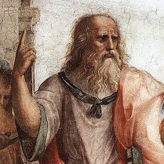
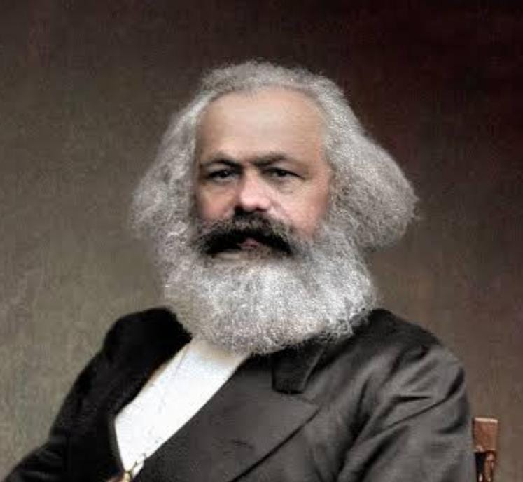
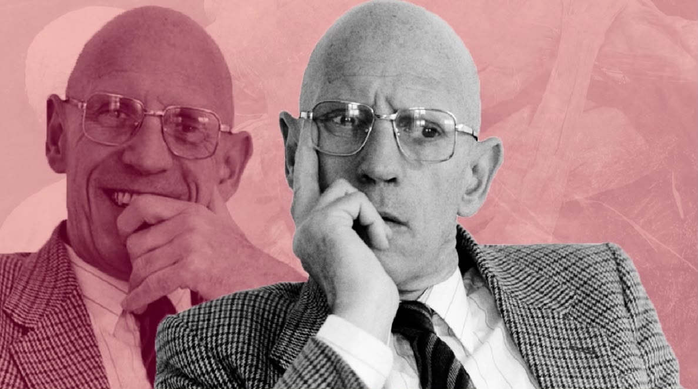
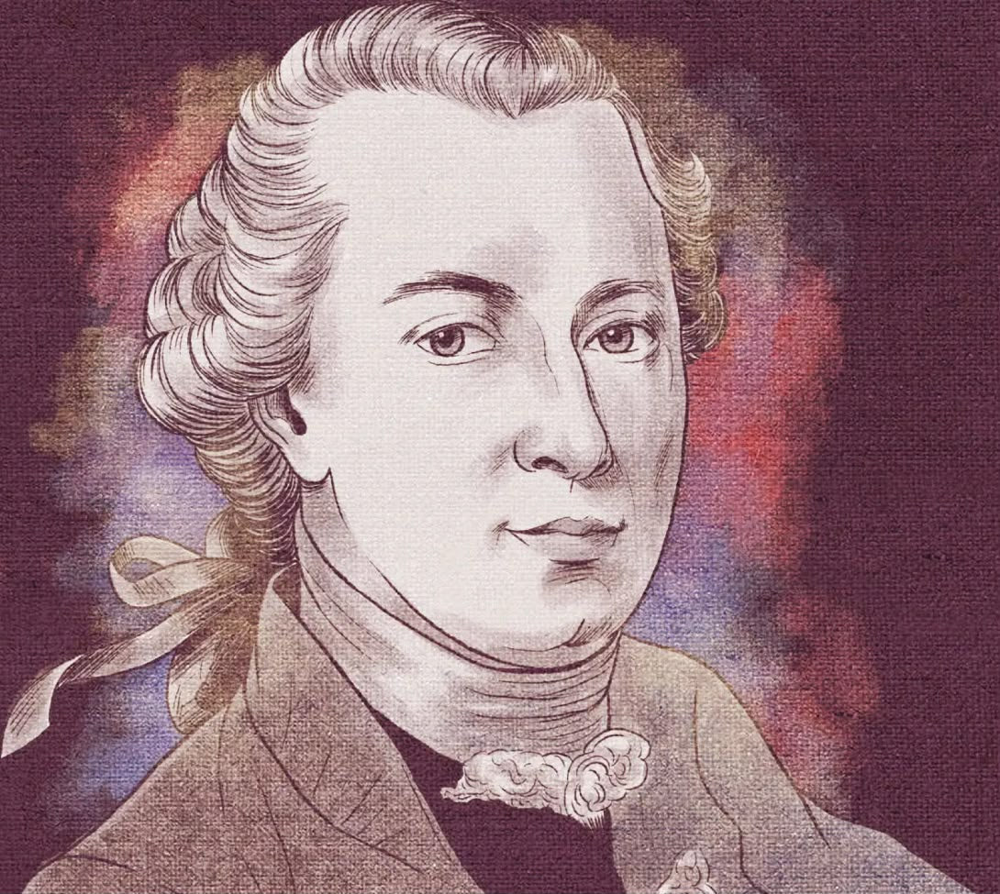

Pensadores
Bem-vindo ao nosso blog escolar! Aqui compartilhamos nossos projetos, ideias e aprendizados. Para iniciar nossa jornada, deixamos algumas reflexões fundamentais que guiam nosso pensamento crítico.

"Não faremos injustiça aos filósofos que se tiverem formado entre nós, mas dir-lhes-emos palavras justas, ao forçá-los a tomar conta dos outros e a guardá-los". Platão entendia que a função do intelectual era indissociável da responsabilidade política, agindo com ética e justiça.- Platão

"Os filósofos limitaram-se a interpretar o mundo de diversas maneiras; o que importa é transformá-lo"- Karl Marx
“Lugar de fala não é silenciamento, é localização". O intelectual engajado busca quebrar o silêncio secular imposto a negros, indígenas e mulheres, permitindo que eles sejam os sujeitos da sua própria história- Djamila Ribeiro

“Cada sociedade possui seu regime de verdade.” Foucault entendia que o intelectual não buscava uma verdade abstrata, mas analisar como as instituições fabricam regimes de verdade e moldam os sujeitos.- Foucault

“Sapere aude! Tenha coragem de fazer uso do teu próprio entendimento.” Para Kant, Sair da menoridade exige que o intelectual atue como um provocador da autonomia, incentivando o uso público da razão contra a tutela do medo e da preguiça.- Immanuel Kant
"Nenhuma sociedade que esquece a arte de questionar pode esperar encontrar respostas para os problemas que a afligem."- Zygmunt Bauman